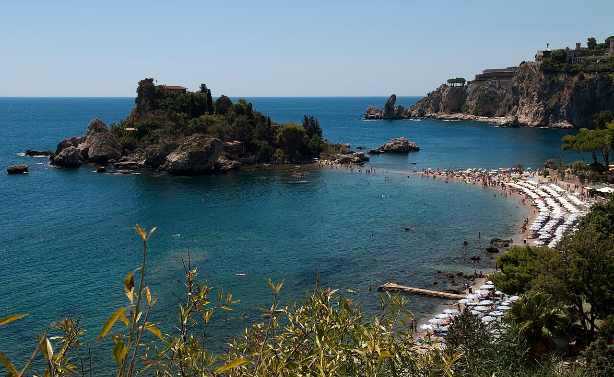

Isola Bella — Taormine
Sicile, Italie · snorkeling, baignade, kayak, paddle

Un îlot relié à la plage par un cordon de galets, classé en réserve naturelle, au pied de Taormine et face à l’Etna. Fonds rocheux clairs et grottes marines.
- Lieu
- Sicile, Italie
- Niveau
- Débutant
- Activités
- snorkeling, baignade, kayak, paddle
- Type d'eau
- Mer / océan
- Coordonnées
- 37.85, 15.30 (position approximative du secteur)
Dangers à connaître
- Galets glissants et fonds rocheux.
- Bateaux d’excursion nombreux en été.
- Réserve naturelle : accès réglementé à l’îlot.
Le conseil d'Ocean Buddy
Longe la côte en kayak vers le nord : les grottes bleues se visitent par mer calme.
Ouvrir dans Ocean Buddy Télécharger sur l'App Store
Source : Description historique Ocean Buddy · vérification externe en attente.